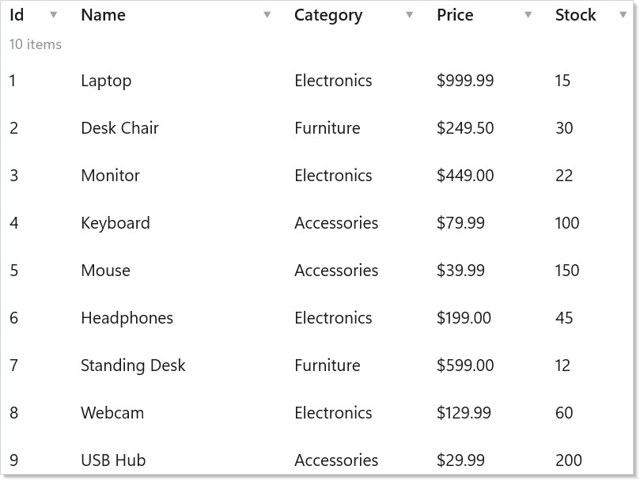
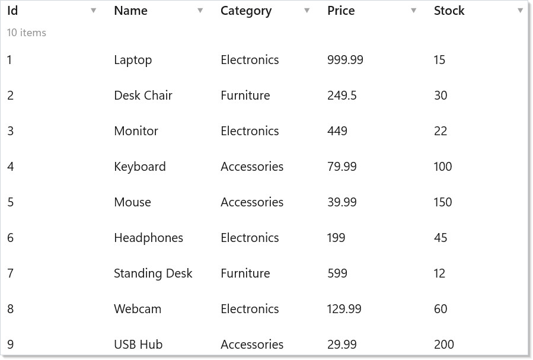
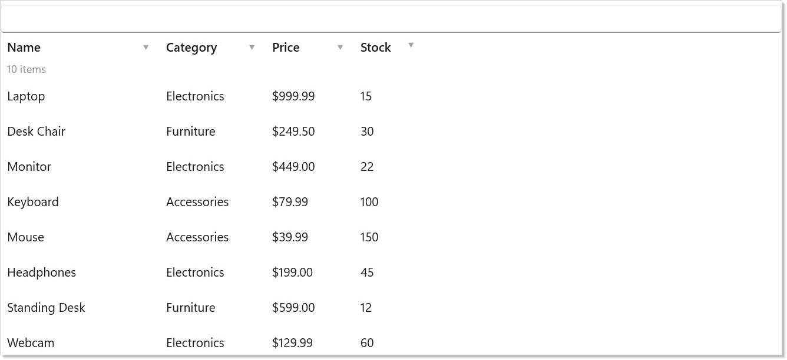
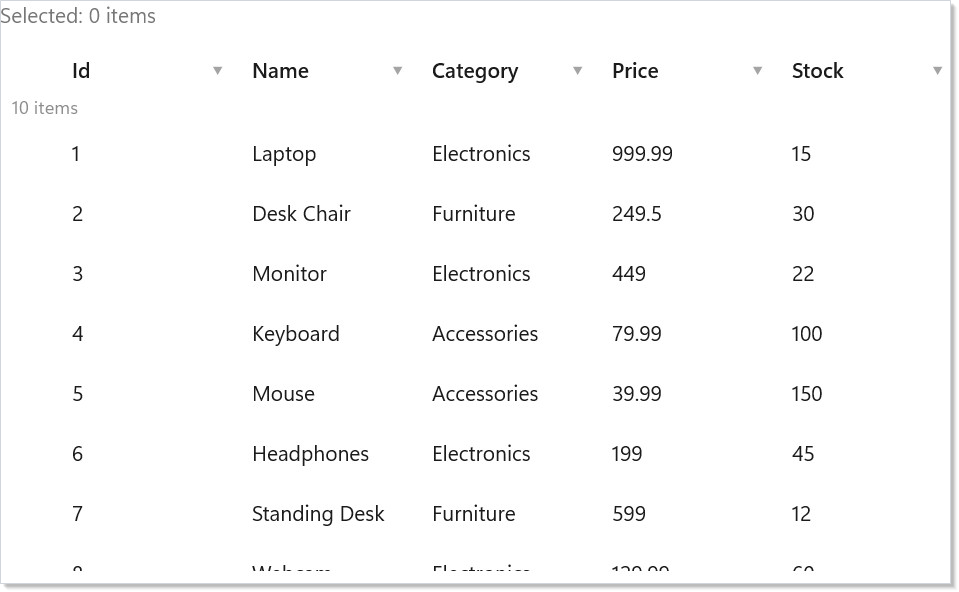
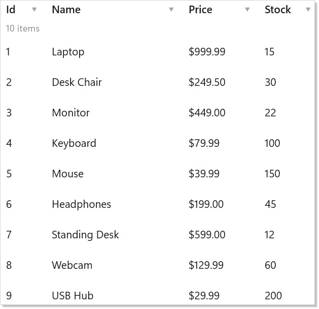
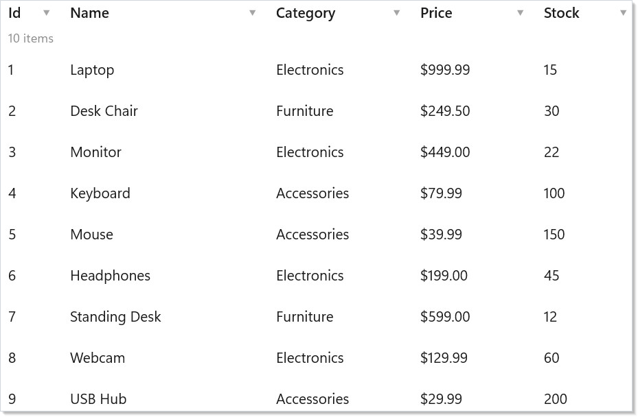
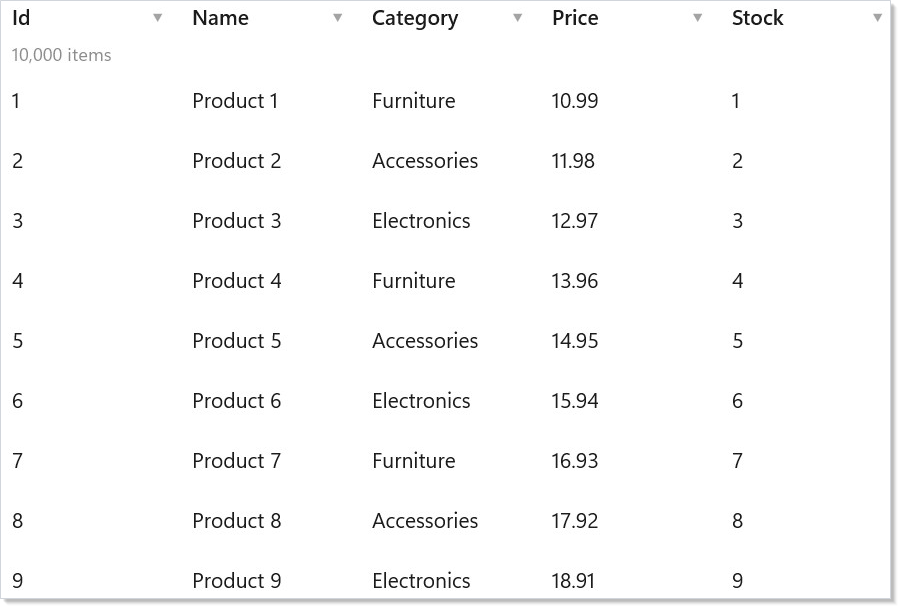
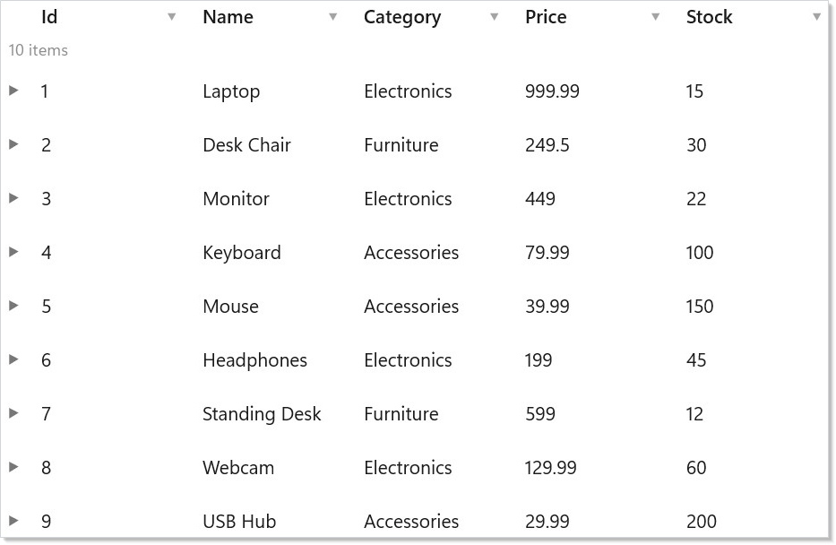

Microsoft.UI.Reactor (Reactor)'s DataGrid<T> is a virtualized table that renders rows lazily from an
IDataSource<T>. The source is the contract, not the data: it returns
pages keyed by sort, filter, and search state, declares its
Capabilities (server-side sort? mutate?), and yields a stable
RowKey per item. The grid is a thin view over that contract — it
asks the source for the visible window on every render, diffs the
returned rows by key, and renders only what changed. This is the
opposite of AG Grid's "row data + column defs" array-shaped input and
closer in spirit to TanStack Table's headless split: source owns data
access, DataGridState<T> owns
sort/selection/edit state, and the grid is the presentation. Two
columns of Column<T>(...) definitions plus a ListDataSource<T>
wrapper is the smallest working grid; an ObservableListDataSource<T>
swap turns it live; a custom IDataSource<T> against your REST or
GraphQL endpoint turns it into a server-driven grid without changing
the column code. Read the source section first — every other section
on this page is about how the grid asks more of it.
Data System¶
Reactor's data system provides a virtualized DataGrid<T> backed by a
pluggable data source abstraction. You define columns (or auto-generate
them), connect a data source, and the grid handles sorting, filtering,
searching, selection, and inline editing.
Data Sources¶
All data flows through IDataSource<T> — an async, page-based abstraction.
You never pass raw lists to the grid; instead you wrap your data in a
source that declares its capabilities:
class DataSourceExample
{
// Wrap an in-memory list — supports client-side sort, filter, search
static ListDataSource<Product> CreateSource() =>
new(SampleProducts.Items, p => (RowKey)p.Id);
// source.Capabilities → Sort | Filter | Search | Count | Mutate
}
ListDataSource<T> wraps an in-memory list and provides client-side sort,
filter, and search. For data-bound collections, use
ObservableListDataSource<T> which tracks ObservableCollection<T>
mutations and fires DataChanged.
| Source | Best for |
|---|---|
ListDataSource<T> |
In-memory lists, local data |
ObservableListDataSource<T> |
Observable collections, live-updating data |
Custom IDataSource<T> |
REST APIs, databases, GraphQL endpoints |
The Capabilities flag is the negotiation point. A source that returns
ServerSort | ServerFilter tells the grid to send sort/filter through
DataRequest and trust the page response; a source that returns None
opts into the grid's client-side fallback path. Custom sources usually
sit between the two — server sort, client search — and the grid honors
each flag independently. See async-resources for
the pattern that wraps a REST endpoint into an IDataSource<T>
without leaking HttpClient into your components.
Defining Columns¶
Use Column<T>() to define columns with a fluent builder. Each column has
a name, an accessor function, and optional configuration:
class ExplicitColumnsDemo : Component
{
public override Element Render()
{
var source = UseMemo(() => new ListDataSource<Product>(
SampleProducts.Items, p => (RowKey)p.Id));
var columns = UseMemo(() => new FieldDescriptor[]
{
Column<Product>("Id", p => p.Id, width: 60),
Column<Product>("Name", p => p.Name, width: 180),
Column<Product>("Category", p => p.Category, width: 120),
Column<Product>("Price", p => p.Price, format: "C2", width: 100),
Column<Product>("Stock", p => p.Stock, width: 80),
});
return DataGrid<Product>(source, columns).Height(400);
}
}

The ColumnBuilder<T> supports chaining:
| Method | Effect |
|---|---|
.Validate(validators...) |
Attach validators for inline editing |
.CellRenderer(fn) |
Custom cell rendering function |
.NotSortable() |
Disable sort for this column |
.Build() |
Finalize the FieldDescriptor |
Column<T>(...) and AutoColumns<T>(...) are static methods on
Microsoft.UI.Reactor.Advanced.Factories — the DataGrid ships in the
optional Microsoft.UI.Reactor.Advanced package (spec 062 §7). Add the
package reference and a second using static:
Auto-Generated Columns¶
For quick prototyping, AutoColumns<T>() generates columns from public
properties using reflection:
class AutoColumnsDemo : Component
{
public override Element Render()
{
var source = UseMemo(() => new ListDataSource<Product>(
SampleProducts.Items, p => (RowKey)p.Id));
var registry = UseMemo(() => new TypeRegistry());
return DataGrid<Product>(source, registry).Height(400);
}
}

Auto-generation uses TypeRegistry for custom type metadata when available.
To tweak individual columns without defining them all manually, pass an
overrides function to AutoColumns<T>(), or columnOverrides: to the
registry-based DataGrid<T>(source, registry, …) overload.
AutoColumns<T>() is a fast-path for demos and admin panels. For
user-facing grids, define columns explicitly — auto-generated columns
follow property order (often arbitrary), use the property name as the
header (often wrong for end users), and expose every public getter
(including ones you didn't mean to surface). Switch to explicit columns
the moment a designer touches the grid.
Sorting and Filtering¶
Click column headers to sort. The grid delegates sorting to the data
source — ListDataSource handles it client-side, while custom sources can
implement server-side sorting:
class SortFilterDemo : Component
{
public override Element Render()
{
var source = UseMemo(() => new ListDataSource<Product>(
SampleProducts.Items, p => (RowKey)p.Id));
var columns = UseMemo(() => new FieldDescriptor[]
{
Column<Product>("Name", p => p.Name, width: 180),
Column<Product>("Category", p => p.Category, width: 120),
Column<Product>("Price", p => p.Price, format: "C2", width: 100),
Column<Product>("Stock", p => p.Stock, width: 80).NotSortable(),
});
return DataGrid<Product>(source, columns, showSearch: true).Height(400);
}
}

Filtering uses FilterDescriptor, whose FilterOperator enum has 13
operators: Equals, NotEquals, Contains, StartsWith, EndsWith,
GreaterThan, GreaterThanOrEqual, LessThan, LessThanOrEqual,
Between, In, IsNull, and IsNotNull.
Enable showSearch: true to add a built-in search bar that highlights
matching cells.
Selection¶
DataGrid supports single and multiple selection modes. Selection state is
reported via the onSelectionChanged callback:
class SelectionDemo : Component
{
public override Element Render()
{
var initialSelection = UseMemo<IReadOnlySet<RowKey>>(() => new HashSet<RowKey>());
var (selected, setSelected) = UseState(initialSelection);
var source = UseMemo(() => new ListDataSource<Product>(
SampleProducts.Items, p => (RowKey)p.Id));
var columns = UseMemo(() => AutoColumns<Product>());
return VStack(12,
TextBlock($"Selected: {selected.Count} items").Opacity(0.6),
DataGrid<Product>(source, columns,
selectionMode: SelectionMode.Multiple,
onSelectionChanged: setSelected).Height(350)
);
}
}

| Mode | Behavior |
|---|---|
SelectionMode.None |
No selection (default) |
SelectionMode.Single |
One row at a time |
SelectionMode.Multiple |
Ctrl+Click, Shift+Click, anchor-based |
Selected rows are identified by RowKey — a stable identity derived from
your data source's GetRowKey implementation. The callback hands you the
full snapshot (IReadOnlySet<RowKey>), not added/removed deltas — same
shape as multi-select on ListView.
Lift the selection state into the parent component so it survives sort,
filter, and refresh; see the master-detail pattern
below.
Inline Editing¶
Set editable: true to enable inline editing. Two edit modes are available:
class InlineEditingDemo : Component
{
public override Element Render()
{
var source = UseMemo(() => new ListDataSource<Product>(
SampleProducts.Items, p => (RowKey)p.Id));
var columns = UseMemo(() => new FieldDescriptor[]
{
Column<Product>("Id", p => p.Id, width: 60),
Column<Product>("Name", p => p.Name, editable: true, width: 180),
Column<Product>("Price", p => p.Price, editable: true,
format: "C2", width: 100),
Column<Product>("Stock", p => p.Stock, editable: true, width: 80),
});
return DataGrid<Product>(source, columns,
editable: true,
editMode: EditMode.Cell,
onRowChanged: async (key, product) =>
{
// Persist the change — e.g., call an API
}).Height(400);
}
}

| Mode | Behavior |
|---|---|
EditMode.Cell |
Edit one cell at a time; commits on blur/Enter |
EditMode.Row |
Edit an entire row; explicit Save/Cancel buttons |
Keyboard behavior differs by mode. In EditMode.Cell, Tab commits the
current cell and opens the editor on the next one. In EditMode.Row, the row is
the unit of work: Enter (or the Save button, or clicking away) commits
every pending cell at once, Esc (or Cancel) discards them all, and
Tab cycles keyboard focus through the row's editable cells — read-only
columns are skipped, and past the last one it wraps back to the first — without
committing anything. Shift+Tab walks the same cycle
backward, wrapping from the first editable cell to the last, and likewise never
commits. Save and Cancel are not part of that Tab cycle;
Enter and Esc are their keyboard equivalents.
Opening an editor moves real keyboard focus into it, so you can start typing
immediately: in EditMode.Cell that is the cell you opened, and in EditMode.Row
it is the cell the focus ring was already on, or the row's first editable cell when
the edit started from the row's Edit button.
Shift+Tab is the mirror of Tab everywhere it
applies: it moves the focused cell backward when you are just navigating, and in
either edit mode it commits exactly what Tab commits — the cell in
EditMode.Cell, nothing in EditMode.Row — differing only in which way it
walks. It mirrors Tab's reach as well as its direction: in
EditMode.Cell it steps to the previous cell whether or not that cell is
editable, reopening an editor only when it is, while in EditMode.Row it stays
inside the row and skips read-only columns.
Editing supports validation — attach validators via Column<T>().Validate().
The onRowChanged callback fires after a successful commit, receiving the
RowKey and updated item. For mutable classes, the grid updates in place;
for records, it creates a new instance with the changed values. The
validator catalogue is the same one forms uses — Validate.Required(),
Validate.Range(min, max), Validate.Must<T>(predicate), etc.
Column Resize and Reorder¶
Users can drag column borders to resize and drag headers to reorder.
Column state (widths, order, visibility, pinning) is managed by
DataGridState and can be persisted:
class ColumnFeaturesDemo : Component
{
public override Element Render()
{
var source = UseMemo(() => new ListDataSource<Product>(
SampleProducts.Items, p => (RowKey)p.Id));
var columns = UseMemo(() => new FieldDescriptor[]
{
Column<Product>("Id", p => p.Id, width: 60,
pin: PinPosition.Left),
Column<Product>("Name", p => p.Name, width: 200),
Column<Product>("Category", p => p.Category, width: 140),
Column<Product>("Price", p => p.Price, format: "C2", width: 120),
Column<Product>("Stock", p => p.Stock, width: 100),
});
return DataGrid<Product>(source, columns).Height(400);
}
}

Pin columns to PinPosition.Left or PinPosition.Right to keep them
visible during horizontal scrolling. Set width in the column definition
for an initial width, or let the grid auto-size.
Incremental Paging¶
For large datasets, DataPageCache<T> loads data in blocks as the user
scrolls. The grid shows placeholder rows for unloaded blocks:
class PagingDemo : Component
{
public override Element Render()
{
var source = UseMemo(() =>
{
var products = Enumerable.Range(1, 10_000)
.Select(i => new Product(i, $"Product {i}",
i % 3 == 0 ? "Electronics" : i % 3 == 1 ? "Furniture" : "Accessories",
Math.Round(10 + i * 0.99, 2), i % 200))
.ToList();
return new ListDataSource<Product>(products, p => (RowKey)p.Id);
});
var columns = UseMemo(() => AutoColumns<Product>());
// DataPageCache loads 50-row blocks on demand, keeps 20 in LRU cache
return DataGrid<Product>(source, columns).Height(400);
}
}

The cache uses an LRU eviction policy — when maxBlocks is reached, the
least-recently-accessed block is evicted. The BlockLoaded event fires
when a block finishes loading, triggering a re-render for the affected rows.
DataPageCache<T> follows a pull model: the grid asks for a row index,
the cache returns the loaded block or initiates the fetch and returns a
Loading placeholder. This is the same paging shape Compose Paging 3
uses, and it differs from the "fetch on scroll" pattern in
VirtualList.onVisibleRangeChanged by
keying off row index rather than scroll position. Use DataPageCache<T>
when you want a count-known surface; use the visible-range callback
when you want a count-unknown infinite feed.
Row Details¶
Expand individual rows to show additional detail content. Pass a
rowDetailTemplate to render expandable content below each row:
class RowDetailsDemo : Component
{
public override Element Render()
{
var source = UseMemo(() => new ListDataSource<Product>(
SampleProducts.Items, p => (RowKey)p.Id));
var columns = UseMemo(() => AutoColumns<Product>());
return DataGrid<Product>(source, columns,
rowDetailTemplate: (product, key) =>
VStack(8,
TextBlock($"Product ID: {product.Id}").Bold(),
TextBlock($"Full details for {product.Name}"),
TextBlock($"Category: {product.Category}"),
TextBlock($"Unit price: {product.Price:C2}, Stock: {product.Stock}")
).Padding(16).Background(Theme.CardBackground)
).Height(400);
}
}

Row details are lazily rendered — the template function only runs when a row is expanded. Use this for showing related data, inline forms, or nested grids.
Headless testing with DataGridState¶
DataGridState<T> is the headless state machine the grid uses
internally — sort descriptors, filter descriptors, selection, focused
cell, edit buffer. It has no UI dependencies; you can construct one
against a ListDataSource<T> in a unit test, dispatch sort/select
calls, and assert on the resulting state without ever mounting the
grid. This is the same separation TanStack Table draws between core
logic and presentation. Most apps never touch DataGridState<T>
directly — the grid mounts and owns one — but if you ship a custom
data layer, the headless state is what your tests should drive.
See testing for the renderer-fixture pattern that pairs
with this.
Caveat: Don't construct
ListDataSource<T>inline inRender(). Every render creates a new instance, the grid'suseMemokeyed on the source identity invalidates, the page cache empties, scroll position resets, and selection clears (selection keys are interpreted against the source'sGetRowKey, not the items). The right shape isUseMemo(() => new ListDataSource<T>(items, x => (RowKey)x.Id), items)— the source is recreated only when the underlying list reference changes. The same rule applies toAutoColumns<T>()and explicitColumn<T>()arrays: stable identity matters. The first failure mode is usually "selection disappears whenever I change anything" — that's the source identity churning.
Patterns¶
Master-detail with lifted selection¶
The grid lives on the left, the detail panel renders on the right, and
the parent component owns the selected key. The grid's
onSelectionChanged writes through to parent state; the detail panel
reads from the same state. Selection survives sort changes, filter
changes, and refresh because the state lives outside the grid:
class MasterDetailDemo : Component
{
public override Element Render()
{
// Selection lives in the parent, so it survives sort, filter, and refresh.
var (selected, setSelected) = UseState<RowKey?>(null);
var source = UseMemo(() => new ListDataSource<Product>(
SampleProducts.Items, p => (RowKey)p.Id));
var columns = UseMemo(() => new FieldDescriptor[]
{
Column<Product>("Name", p => p.Name, width: 180),
Column<Product>("Price", p => p.Price, format: "C2", width: 100),
});
var detail = SampleProducts.Items.FirstOrDefault(
p => selected is { } key && (RowKey)p.Id == key);
return HStack(0,
DataGrid<Product>(source, columns,
selectionMode: SelectionMode.Single,
// The callback hands you the full selection snapshot, not a delta.
onSelectionChanged: keys => setSelected(
keys.Count == 0 ? null : (RowKey?)keys.First())
).Width(480).Height(350),
detail is null
? Border(Caption("Select a product")).Padding(24)
: VStack(4,
SubHeading(detail.Name),
Caption($"{detail.Category} — {detail.Price:C2}")
).Padding(24).Width(360));
}
}
The full pattern with sub-grids, optimistic updates, and async detail
load lives in the recipes/master-detail
recipe. The key structural point: selection state outlives the grid.
Live data via ObservableListDataSource¶
When your data is an ObservableCollection<T> driven by a
UseObservableTree source or a background worker,
ObservableListDataSource<T> is the bridge. It listens to
CollectionChanged, fires IObservableDataSource<T>.DataChanged, and
the grid responds by re-fetching the visible page. No render-loop
hooks; the grid subscribes when it mounts and unsubscribes when it
unmounts:
class ObservableSourceDemo : Component
{
public override Element Render()
{
// One stable collection instance. UseMemo takes a factory, so the
// collection is allocated once; UseRef would re-evaluate its argument
// on every render and throw the copy away.
var collection = UseMemo(() => new ObservableCollection<Product>(SampleProducts.Items));
var source = UseMemo(() => new ObservableListDataSource<Product>(
collection, p => (RowKey)p.Id), collection);
// The source subscribes to CollectionChanged and is IDisposable, so
// memoizing it is not enough — dispose it on unmount or the collection
// keeps the source (and its per-item subscriptions) alive.
UseEffect(() => () => source.Dispose(), source);
var columns = UseMemo(() => new FieldDescriptor[]
{
Column<Product>("Name", p => p.Name, width: 180),
Column<Product>("Stock", p => p.Stock, width: 80),
});
return VStack(12,
// Mutations raise CollectionChanged -> DataChanged -> the grid re-fetches.
Button("Add product", () => collection.Add(new Product(
collection.Count + 1, "New item", "Accessories", 9.99, 1))),
DataGrid<Product>(source, columns).Height(320));
}
}
The mutation pattern works for incoming server pushes (SignalR feed, WebSocket stream) — push into the observable collection on the UI thread (see threading-and-dispatch) and the grid catches up.
Server-driven paging with a custom IDataSource¶
For data behind a paged REST or GraphQL endpoint, implement
IDataSource<T> directly.
GetPageAsync(DataRequest request, CancellationToken cancellationToken = default)
receives the sort/filter/search state and the requested page offset on the
DataRequest, with the cancellation token as a separate parameter; return a
DataPage<T> with the items and TotalCount (if known). Mount the grid
against your source — same column code, same selection callback. Set
Capabilities = ServerSort | ServerFilter | ServerCount to opt out of
the client-side fallback path (DataSourceCapabilities also carries
ServerSearch, ServerSelect, Mutate, and Refresh). The
recipes/paginated-list recipe walks the
shape end-to-end for a list; the grid wires up identically.
Common Mistakes¶
Recreating the data source on every render¶
// Don't:
public override Element Render()
{
var source = new ListDataSource<Product>(SampleProducts.Items, p => (RowKey)p.Id);
return DataGrid<Product>(source, columns);
}
class ExplicitColumnsDemo : Component
{
public override Element Render()
{
var source = UseMemo(() => new ListDataSource<Product>(
SampleProducts.Items, p => (RowKey)p.Id));
var columns = UseMemo(() => new FieldDescriptor[]
{
Column<Product>("Id", p => p.Id, width: 60),
Column<Product>("Name", p => p.Name, width: 180),
Column<Product>("Category", p => p.Category, width: 120),
Column<Product>("Price", p => p.Price, format: "C2", width: 100),
Column<Product>("Stock", p => p.Stock, width: 80),
});
return DataGrid<Product>(source, columns).Height(400);
}
}
A fresh ListDataSource<T> on every render churns the grid's internal
identity, dumps the page cache, and clears selection. Wrap source
construction in UseMemo keyed on the underlying data — the source
lives across renders, the grid keeps its scroll position, and
selection survives the next state update.
Storing selection inside the grid¶
// Don't:
DataGrid<Order>(source, columns,
selectionMode: SelectionMode.Multiple)
// (no onSelectionChanged — selection state lives only inside the grid)
The grid does maintain selection internally, but reading it requires a
ref and the state is invisible to the rest of your component. Lift the
selection out: var initialSelection = UseMemo<IReadOnlySet<RowKey>>(() => new HashSet<RowKey>())
plus var (selected, setSelected) = UseState(initialSelection) and
onSelectionChanged: setSelected. Declare the state as IReadOnlySet<RowKey>
rather than HashSet<RowKey> — that is the exact parameter type of the
callback, so the setter binds directly. Toolbars, badges, and detail panels
that need "what's selected" can now read it.
Using AutoColumns in production¶
// Don't:
DataGrid<Order>(source, registry)
// — relies on property names as headers, property order as column order,
// and every public getter being a sensible column
AutoColumns<T>() is for demos and admin tools. Production grids define
columns explicitly: Column<Order>("Order #", o => o.Id, width: 80) —
the header is reviewed, the order is intentional, and you don't
accidentally surface o.InternalAuditFlag. The five extra lines pay
for themselves the first time a designer asks for "Order #" instead of
"Id".
Tips¶
Start with ListDataSource and explicit columns. Auto-columns and
custom data sources add complexity. Get the grid working with a simple
in-memory list first, then evolve.
Use EditMode.Cell for spreadsheet-style editing. Cell mode is faster
for quick edits. Use EditMode.Row when edits need validation across
multiple fields before committing.
Pin ID or key columns. When horizontal scrolling is likely, pin the identifying column so users always know which row they are looking at.
Prefer records for immutable data. The grid handles both mutable classes
and immutable records. Records are simpler and safer — the grid creates
with copies automatically.
Set rowHeight for uniform rows. A fixed height enables O(1) scroll
offset calculation. Omit it only when rows genuinely vary in height.
Next Steps¶
- WinForms Interop — next topic: host Reactor components inside WinForms apps
- Collections — simpler list and grid elements for non-tabular data
- Forms and Input — controlled inputs and validation patterns used in grid editing
- Advanced Patterns — performance tuning, error boundaries, and observable data binding
- Hooks — the hook system powering DataGrid's internal state